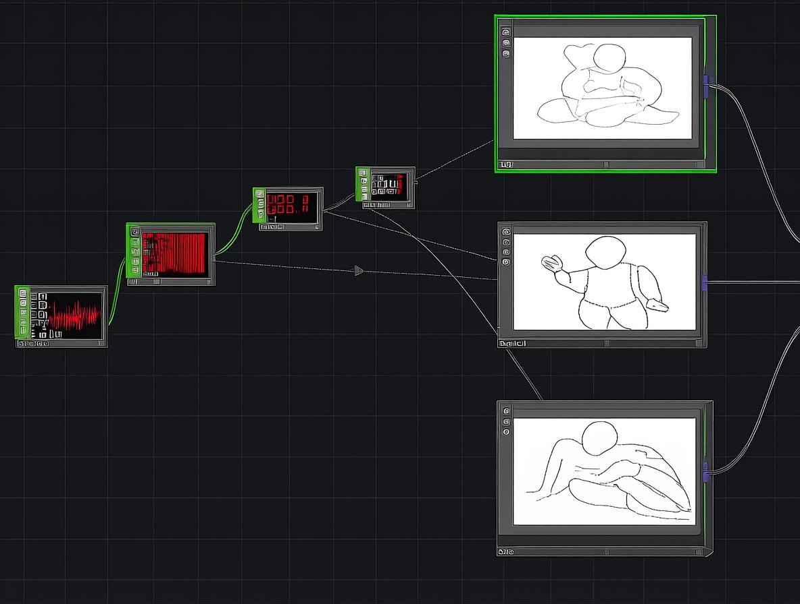

Waifu404: Cuerpo No Encontrado explora un fenómeno presente en la vida visual y afectiva de adolescentes mexicanos: La hipersexualización de la mujer en la industria del anime y su impacto en la percepción del cuerpo femenino en el sector adolescente de la sociedad mexicana. La obra surge de la inquietud sobre qué ocurre cuando, para muchos jóvenes, el primer referente del cuerpo femenino no es un cuerpo real, sino una imagen animada prototipada para complacer, y cómo afecta a la percepción de esta corporeidad, pues se replican y refuerzan los cánones estéticos corporales que la hegemonía ha implantado en la sociedad.
La pieza propone una inversión provocadora y fragmentaria: en lugar de una "waifu" idealizada común, se presenta un cuerpo sin rostro y sin ropa visible proyectado en el centro de las pantallas, con un enfoque deliberadamente ambiguo que lo muestra como una superficie expuesta, desprovista de identidad propia. A los costados, de manera intermitente, aparecen poses, gestos, vestimentas y expresiones que evocan el lenguaje visual del anime y del fanservice, acompañadas por frases como "¿En qué pose me necesitas?", que alternan entre la docilidad y la sensualidad.Esta configuración visual no pretende reforzar la erotización, sino exponer la forma en que el cuerpo femenino es troceado, estetizado y reducido a una secuencia de signos que obedecen a un mandato visual y afectivo de sumisión.
